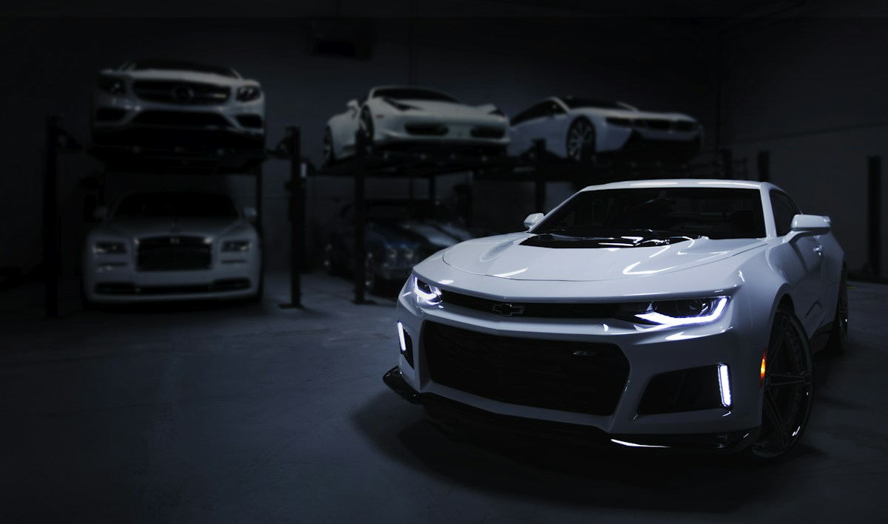
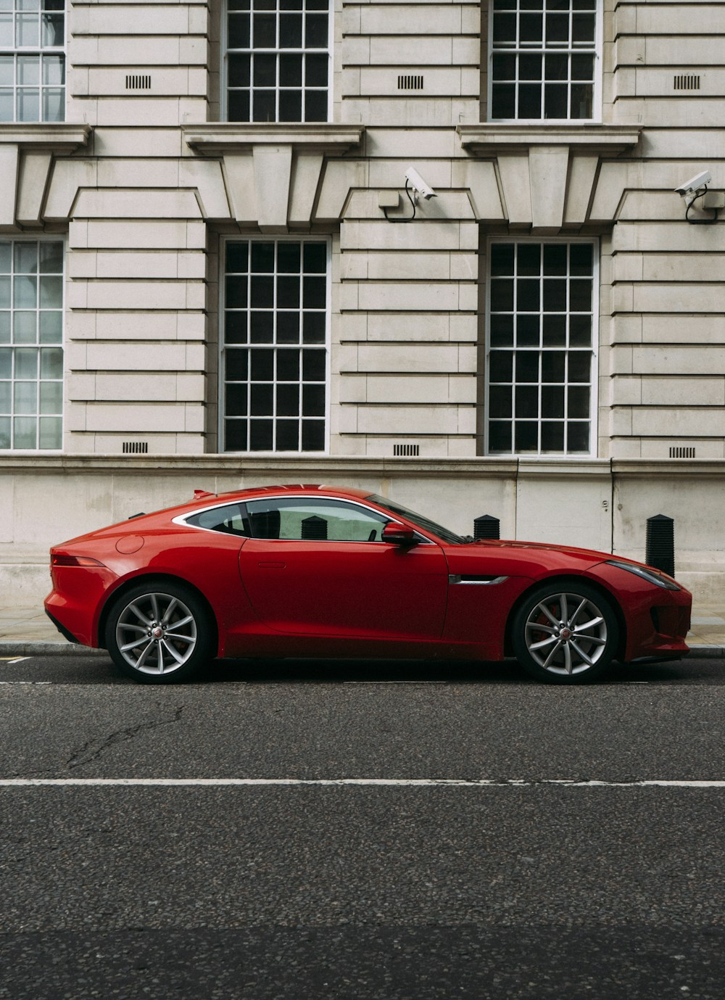

Сначала знакомимся
Смотрим состояние кузова и салона. Обсуждаем, как вы пользуетесь автомобилем и какой результат хотите получить.
Чистые линии. Глубокий цвет. Ваш автомобиль —
в той самой форме, за которую вы его полюбили.
От первого знакомства до регулярного ухода.
Подбираем процедуру под состояние автомобиля
и то, что важно именно вам.
Уменьшает мелкие царапины и следы от моек, возвращает лаку блеск. Глубокие повреждения не всегда можно убрать полировкой — сначала нужен осмотр.
Гидрофобное покрытие помогает воде и загрязнениям меньше задерживаться на поверхности. Усиливает блеск и облегчает мойку. Не заменяет защитную плёнку от сколов.
Прозрачная полиуретановая плёнка принимает на себя часть повседневных воздействий. Можно закрыть зоны риска: бампер, капот, зеркала и передние крылья. Защита имеет пределы и зависит от условий эксплуатации.
Глубокая очистка текстиля, кожи и труднодоступных мест. Средства и способ работы подбираются под материал. Стойкие пятна и запахи оцениваются отдельно.
Стоимость и сроки согласовываются после осмотра автомобиля.
Не нужно разбираться в составах и технологиях.
Начните с того, что хочется изменить.
Для потускневшего лака и мелких следов от моек. Глубину коррекции мастер определяет после осмотра покрытия.
Нас вдохновляют чистые поверхности,
точные линии и внимание к мелочам.

01 — ГЛУБИНА
02 — ХАРАКТЕРСмотрим состояние кузова и салона. Обсуждаем, как вы пользуетесь автомобилем и какой результат хотите получить.
Определяем объём работ, материалы, стоимость и сроки до начала процедур. Объясняем возможности и ограничения.
После ухода вместе осматриваем автомобиль. Рассказываем, как его мыть и когда стоит обновить защиту.
Мойка убирает текущие загрязнения. Детейлинг — более подробная работа с состоянием поверхностей: очистка, коррекция дефектов и защита. Набор процедур зависит от автомобиля и вашей задачи.
Для снижения риска сколов рассматривают защитную плёнку. Для гидрофобного эффекта и более лёгкого ухода — керамическое покрытие. Эти решения можно сочетать, но сначала стоит определить приоритет и бюджет.
Нет. При полировке снимается небольшая часть лака, поэтому важны его состояние и запас толщины. Глубокие царапины могут потребовать другого ремонта. Без осмотра обещать полное удаление нельзя.
Новый автомобиль тоже стоит осмотреть: возможны следы транспортировки и подготовки у дилера. Дальнейший уход зависит от состояния покрытия и планов владельца. Полировка нужна не каждому новому авто.
Цена зависит от размеров автомобиля, состояния материалов, площади оклейки и необходимой подготовки. Фотографии помогают оценить объём предварительно, а окончательный состав работ определяют на осмотре.
Расскажите об автомобиле и своей задаче.
Первый шаг — просто познакомиться.